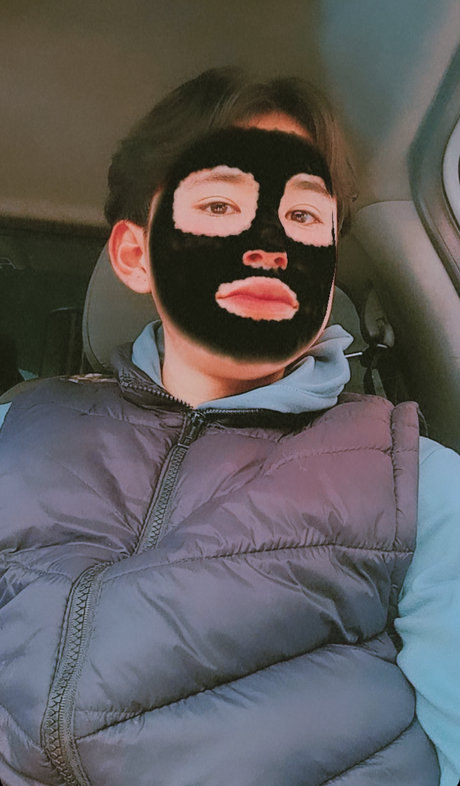

<center><table border="1" align= "center" width="60%" heigth="90px" sytle = font-size:60%>
<tr><td><center></center></td>

<head><title>LCT9.html</title></head> 

<tr><td><center><h1><font size="2"><font face="Comic Sans MS"><font color="black"><div align="justify"><center>Colegio de Estudios Cientificos y Tecniologicos del Estado de Mexico.     
Modulo 3: submodulo 2 y submodulo 3.</center></div align</del></u></p></font size></font color></font face></center></h1>
<h1><font size="2"><font face="Comic Sans MS"><font color="black"><div align="justify"><center>Nombres del Alumno:Samuel Angelino Garcia      
</center></div align></del></u></p></font size></font color></font face></center></h1>
<p><font color="black" size="3" face="tohoma"><center><strong>Elaborado por:</strong> Samuel Angelino Garcia.
<strong>Grupo:</strong>402  <strong>  Numero de lista:4</strong><br>
<strong>Ciclo Escolar:</strong>2024-2024<strong></center></td>
<br>

<tr>
<td colspan="3" bgcolor="blue"><font size="5"><center><strong>"Leccion Costruye T (9)"</strong>
<tr>

<tr>
<td><center><strong>Introducción</strong><h1><font size="3"><font face="Arial"><font color="black"><p style="text-align:justify">¿Puede recordar más de una situación en la que usted haya brindado ayuda? Al ayudar a los demás podemos notar el bienestar que les trae, pero ¿Ha reflexionado sobre los beneficios que una conducta altruista aporta a su vida? Asumir que todos y cada uno de nuestros actos tienen consecuencias e impactan en los demás, no solo nos permite influir en el entorno que nos rodea, sino también en nuestro 
propio desarrollo personal. En esta lección se explorarán los beneficios que nos trae ser solidarios con 
los demás.
</del></u></p></font size></font color></font face></center></h1></td>

<tr>
<td colspan="3" bgcolor="blue"><center><strong>"Hacer el bien, sin mirar a quién"</strong>
<tr>
<td colspan="3"><center></center></td>
<tr>

<tr>
<td colspan="3" bgcolor="blue"><center><strong>Descripcion:</strong><h1><font size="3" face="Arial"><font color="black"><p style="text-align:justify">
</div align></del></u></p></font size></font color></font face></center></h1></td>
<tr><td><font size="3" face="Arial"><p style="text-align:justify">Lo que esta ocurriendo en la imagen es que esta insendiandose una zona que pértenese a un bosque en la cual fue provocada por la irresposabilidad de unas personas y acausa de ello proboca la perdida de habitad de alguna especies en la zona en la cual tanbien deja sin especies y sin es zon sin alimentos para los animales en los que algunos de elos se quedan sin comer y tienen que buscar otro ugar de habitad de las para ellos.</font color></font face></td></tr>

<tr>
<td colspan="3" bgcolor="blue"><center><strong>Preguntas:</strong><h1><font size="3"><font face="Arial"><font color="black"><p style="text-align:justify">
</div align></del></u></p></font size></font color></font face></center></h1></td>
<tr><td><strong>1._¿Qué se te viene a la mente?</strong></td></tr>
<tr><td>Lo que se me viene a la mente es que hace unos años nos paso a mi y a mi familia que por estar jugando mis primos y otros niños insendiaron el sakate de uno de mis vecinos y pz hay estamos tosdos tratando de apagar el insenduio.</td></tr>
<tr><td><strong>2._¿Cómo podrías ayudar?</strong></td></tr>
<tr><td>Llamando a las autoridades correspondientes para que se hagan cargo de la situacion y si puedo colaborar en eso mucho mejor.
</td></tr><tr><td><strong>3._¿Por qué crees que se sucedieron así las cosas?</strong></td></tr>
<tr><td>Por la irresponsabilidad de personas que no les interesa la naturaleza no le importa la vida de las especies que son riquezas de nuestro planeta.</td></tr>
</td></tr><tr><td><strong>3._¿Qué conductas y valores se ponen en práctica?</strong></td></tr>
<tr><td>Por la iresponsabilidad de las personas. No tomando en cuenta sus valores como el de responsabilidad,paz,libertad.</td></tr>

<td colspan="3" bgcolor="blue"><center><strong>Escribe tus concluciones:</strong><h1><font size="3" face="Arial"><font color="black"><p style="text-align:justify">
</div align></del></u></p></font size></font color></font face></center></h1></td>
<tr><td><font size="3" face="Arial"><p style="text-align:justify">Devemos de ser responzables en el momento en el que a causa de nuestros actos realizamos porque todo lo que hacemos tienen concecuencias y hay que afrontarlos a unque nos perjudique en nuestra vida pero tener una responsabilidad y dar la libertad de la vida a todos los seres vivos.</font color></font face></td></tr>

<tr>
<td colspan="3"><center></center></td>
<tr>


<tr>
<td colspan="3"><center></center></td>
<tr>
<td><center>
"<footer>
  <p>&copy; 2024  Samuel Angelino Garcia </p>
  <ul>
    <li><a href="/acerca-de"> >>"No se npermite la reproduccion de este documento"<< </a></li>
    <li><a href="/conectar">Autor: Samuel Angelino Garcia</a></li>
  </ul>
</footer>"</center>
</center></table></br></td>